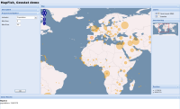
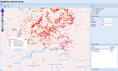

World Fact Book demo (GeoStat)
This demo demonstrates the geographical statistic module of MapFish. Different set of data can be displayed on map using chrolopleth or proportional symbols. The data classification can be modified dynamically directly from the page.
Camptocamp.org (Search)
This demo shows the search module. Several different ways of performing searches are available.
The layer tree widget can also be seen on that page.
Other examples (targetted for developpers) are available in the examples page